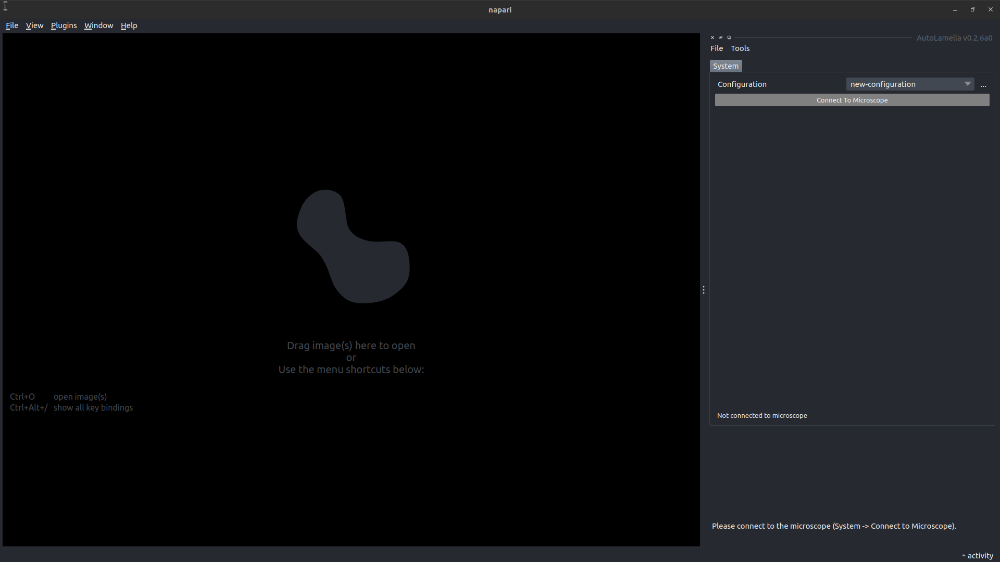
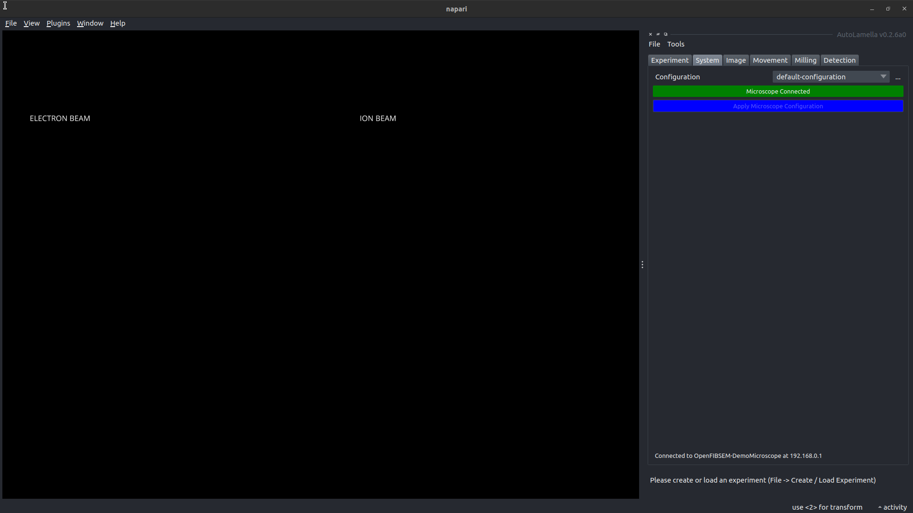
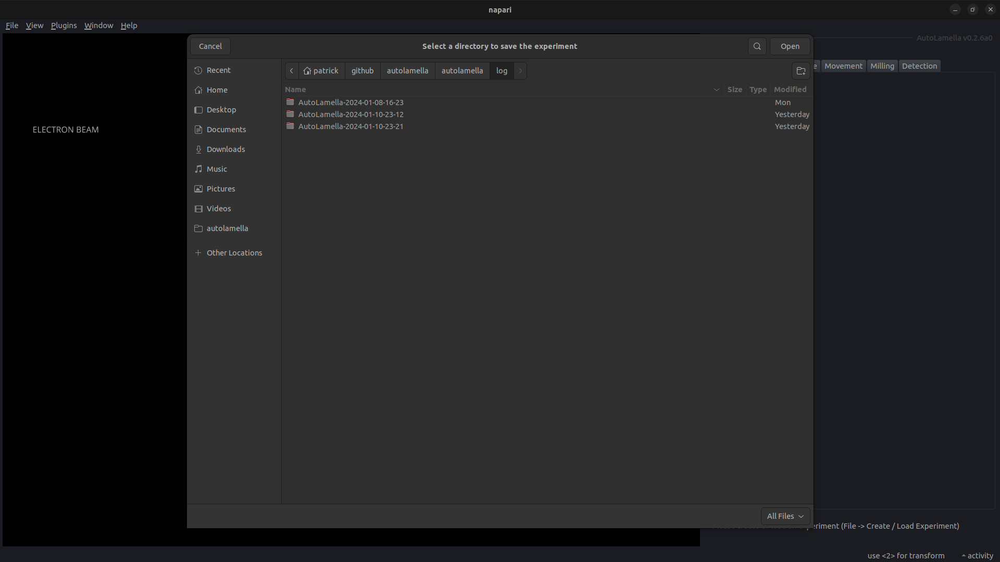
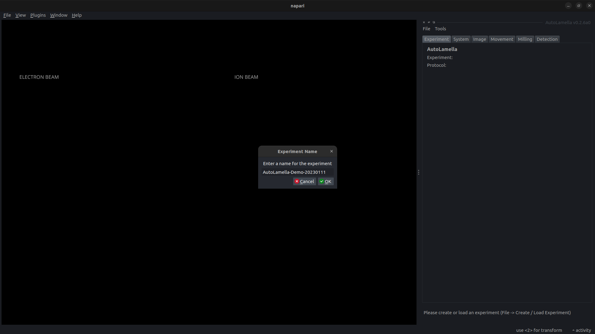
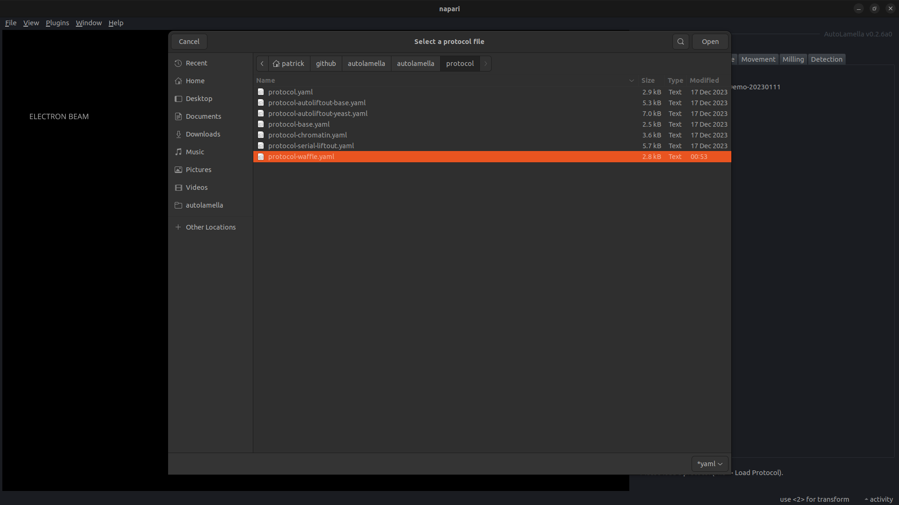
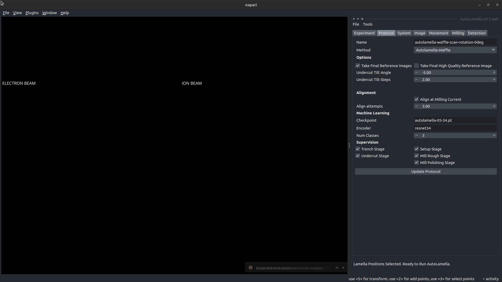
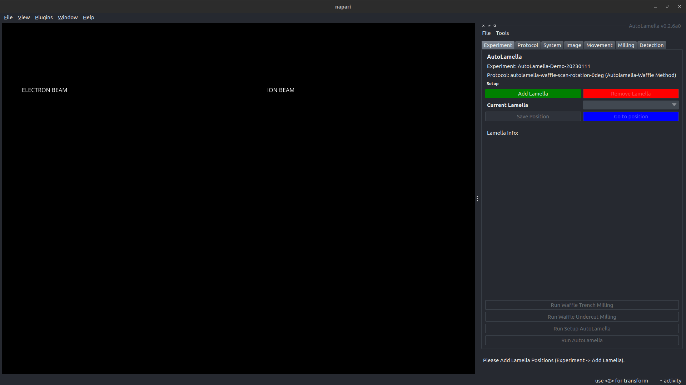
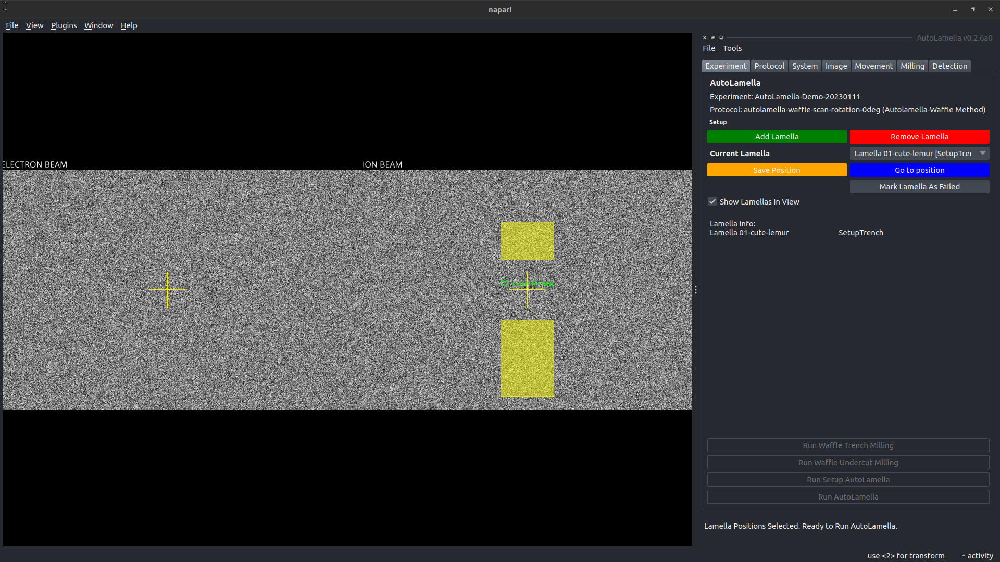
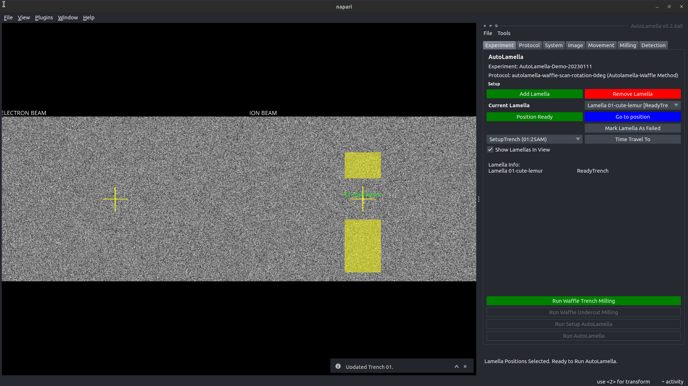

Getting Started
Installation
To install autolamella:
This will also install the openfibsem dependency.
Alternatively, installing the napari plugin with pip or through the napari plugin manager, will install autolamella.
Microscope Configuration
Please see the OpenFIBSEM API Getting Started for details about configuring your microscope.
Protocols
The protocol file defines everything about the workflow. This includes the method, machine learning parameters, workflow options, and the milling configurations.
We provide individual baseline protocols for each method:
- autolamella-on-grid: protocol-on-grid.yaml
- autolamella-waffle: protocol-waffle.yaml
- autolamella-autoliftout: protocol-autoliftout-base.yaml
- autolamella-serial-liftout: protocol-serial-liftout.yaml
It is recommended that you start with either the on-grid or waffle method in supervised mode to test everything is working correctly.
For details about the protocol options, please see Protocol Structure below. For details about milling configurations, please see the Milling API.
Running AutoLamella
Once you have configured your microscope, and have a protocol selected, you are ready to run AutoLamella.
To run autolamella:
To run the liftout methods (these will be merged into the main user interface eventually):
Or launch via napari plugin manager: Napari -> Plugins -> Napari OpenFIBSEM -> AutoLamella UI
User Guide
The following steps show the basic walkthrough for starting autolamella. The waffle method is used as an example.
For a detailed walkthrough on each method please see AutoLamella Walkthrough.
 AutoLamella - Start Screen
 AutoLamella - Microscope Connected
 AutoLamella - Create Experiment
 AutoLamella - Name Experiment
 AutoLamella - Select Protocol
 AutoLamella - Protocol UI
 AutoLamella - Ready to Start
 AutoLamella - Add Lamella
 AutoLamella - Trench Ready
From here you can follow the instructions at the bottom right of the screen, and they will walk you through the workflow.
Protocol Structure
The following is the entire protocol structure for all methods. Each method uses a subset of the configuration listed here.
# protocol
options:
name: autolamella-waffle-mouse-scan-rotation-0deg # descriptive name of the protocol
method: autolamella-waffle # protocol method (see supported methods)
ml-checkpoint: autolamella-waffle-20240107.pt # machine learning checkpoint to use (see supported models)
use_microexpansion: false # mill the microexpansion patterns (stress relief)
use_notch: true # mill the notch pattern (stress relief)
alignment_attempts: 3.0 # the max number alignment repeat attempts
alignment_at_milling_current: true # whether to align at the milling or imaging current
take_final_reference_images: true # acquire reference images after final polishing
high_quality_image:
enabled: false # acquire high quality (frame-integrated) images after final polishing
dwell_time: 2.0e-6 # dwell time for hq
resolution: [3072, 2048] # resolution for hq
hfw: 50.e-6 # hfw for hq
frame_integration: 2 # frame integration for hq
take_final_overview_image: true # acquire a low-magnification overview after final polishing
compucentric_x_offset: 0.0e-6 # the fixed offset in x to apply after compucentric rotation
compucentric_y_offset: 0.0e-6 # the fixed offset in y to apply after compucentric rotation
supervise: # enable supervision mode for indvidual stages
supervise:
landing: true
liftout: true
reset: true
trench: true
undercut: true
setup_lamella: true
mill_rough: true
mill_regular: true
mill_polishing: true
batch_mode: true # batch trenching stages together
confirm_next_stage: true # confirm with the user before advancing to next stage
undercut_required: False # complete the undercut stage
undercut_return_to_electron: True # return flat to electron beam after undercut
liftout_joining_method: None # method to join the manipulator and lamella (autolamella-autoliftout only) [None, Weld]
liftout_contact_detection: True # use brightness based contact detection (autolamella-autoliftout only)
liftout_contact_offset: 0.25e-6 # additional offset movement after contact (autolamella-autoliftout only)
liftout_charge_neutralisation_iterations: 35 # number of ion images to charge sample (autolamella-autoliftout-only)
landing_joining_method: Weld # method to join lamella and landing post (autolamella-autoliftout only) [Weld]
landing_post_x_offset: 0.75e-6 # additional offset movement after contact (autolamella-autoliftout only)
landing_charge_neutralisation_iterations: 100 # number of electron images to discharge sample (autolamella-autoliftout only)
trench_start_position: grid-01-lamella # the saved position to start selecting lamella positions
landing_start_position: grid-02-landing # the saved position to start selecting landing positions
landing_grid: # the landing grid parameters (autolamella-serial-liftout only)
x: 100.0e-6
y: 400.0e-6
rows: 4
cols: 10
platinum: # platinum deposition parameters (optional)
application_file: cryo_Pt_dep
beam_current: 5.0e-11
dwell_time: 1.0e-06
gas: Pt dep
position: Electron Default
rate: 3.0e-10
spot_size: 3.0e-06
weld:
hfw: 0.0001
length: 1.5e-05
time: 30.0
whole_grid:
hfw: 3.0e-05
length: 7.0e-06
time: 30.0
milling: # milling protocols for each stage (required for method)
notch: # notch (autolamella-waffle)
application_file: autolamella
cleaning_cross_section: false
depth: 2.5e-06
distance: 2.0e-06
enabled: true
flip: 0
hfw: 80e-6
hheight: 2.0e-07
hwidth: 4.0e-06
milling_current: 2.0e-09
preset: 30 keV; 2.5 nA
vheight: 2.0e-06
vwidth: 2.0e-07
type: WaffleNotch
trench: # trench: (autolamella-waffle, autolamella-autoliftout, autolamella-serial-liftout)
application_file: autolamella
cleaning_cross_section: false
depth: 1.25e-06
hfw: 0.00018
lamella_height: 2.5e-05
lamella_width: 2.2e-05
milling_current: 7.6e-09
offset: 0.0
preset: 30 keV; 2.5 nA
size_ratio: 2.0
trench_height: 3.2e-05
type: Trench
undercut: # undercut: (autolamella-waffle, autolamella-autoliftout, autolamella-serial-liftout)
application_file: autolamella
cleaning_cross_section: false
depth: 1.2e-06
height: 16.0e-06
hfw: 8.0e-05
milling_current: 7.6e-09
preset: 30 keV; 2.5 nA
tilt_angle: -5.0
tilt_angle_step: 2.0
width: 22.0e-6
type: Rectangle
fiducial: # fiducial: (all)
application_file: autolamella
cleaning_cross_section: false
depth: 1.5e-06
enabled: true
height: 1.0e-05
hfw: 8.0e-05
milling_current: 7.6e-09
passes: null
preset: 30 keV; 20 nA
rotation: 45
width: 1.0e-06
type: Fiducial
lamella: # lamella: (all)
stages:
- application_file: autolamella
cleaning_cross_section: true
depth: 2.0e-06
hfw: 8.0e-05
lamella_height: 5.0e-07
lamella_width: 14.0e-6
milling_current: 2.0e-09
offset: 2.0e-06
preset: 30 keV; 2.5 nA
size_ratio: 1.0
trench_height: 5.0e-06
type: Trench
- application_file: autolamella
cleaning_cross_section: true
depth: 1.0e-06
hfw: 8.0e-05
lamella_height: 5.0e-07
lamella_width: 1.4e-05
milling_current: 7.4e-10
offset: 5.0e-07
preset: 30 keV; 1 nA
size_ratio: 1.0
trench_height: 2.0e-06
type: Trench
- application_file: autolamella
cleaning_cross_section: true
depth: 4.0e-07
hfw: 8.0e-05
lamella_height: 4.5e-07
lamella_width: 1.4e-05
milling_current: 6.0e-11
offset: 0.0
preset: 30 keV; 50 pA
size_ratio: 1.0
trench_height: 6.0e-07
type: Trench
flatten: # flatten: (autolamella-autoliftout)
cleaning_cross_section: 1.0
depth: 1.0e-05
height: 2.5e-05
hfw: 8.0e-05
milling_current: 2.8e-08
rotation: 0.0
scan_direction: LeftToRight
width: 2.0e-06
application_file: "autolamella"
type: "Rectangle"
preset: "30 keV; 20 nA"
liftout-sever: # liftout-sever: (autolamella-serial-liftout)
cleaning_cross_section: 0.0
depth: 25.0e-06
height: 5.0e-06
hfw: 400.0e-6
milling_current: 28.0e-09
rotation: 0.0
scan_direction: TopToBottom
width: 50.0e-06
application_file: "autolamella"
type: "Rectangle"
preset: "30 keV; 20 nA"
liftout-weld: # liftout-weld: (autolamella-serial-liftout)
height: 2.5e-6
width: 0.5e-6
depth: 4.0e-6
pitch_horizontal: 0.25e-6
n_columns: 10
n_rows: 1
pitch_vertical: 0.0e-6
rotation: 0.0
passes: 1.0
milling_voltage: 30.0e+3
milling_current: 300.0e-12
hfw: 150.0e-6
application_file: "autolamella"
scan_direction: "BottomToTop"
type: "ArrayPattern"
preset: "30 keV; 2.5 nA"
prepare-copper-weld: # prepare-copper-block-weld: (autolamella-serial-liftout)
stages:
- height: 2.5e-6
width: 0.5e-6
depth: 4.0e-6
pitch_horizontal: 1.0e-6
n_columns: 15
n_rows: 1
pitch_vertical: 0.0e-6
rotation: 0.0
passes: 1.0
milling_voltage: 30.0e+3
milling_current: 300.0e-12
hfw: 150.0e-6
application_file: "autolamella"
scan_direction: "TopToBottom"
type: "ArrayPattern"
preset: "30 keV; 2.5 nA"
landing-weld: # weld: (autolamella-autoliftout, autolamella-serial-liftout)
stages:
# left weld
- height: 0.5e-6
width: 4.0e-6
depth: 10.0e-6
pitch_vertical: 0.25e-6
n_rows: 5
n_columns: 1
pitch_horizontal: 0
rotation: 0.0
passes: 1.0
milling_current: 300.0e-12
milling_voltage: 1.0e-9
hfw: 150.0e-6
application_file: "autolamella"
scan_direction: "RightToLeft"
type: "ArrayPattern"
# right weld
- height: 0.5e-6
width: 4.0e-6
depth: 10.0e-6
pitch_vertical: 0.25e-6
n_rows: 5
n_columns: 1
pitch_horizontal: 0
rotation: 0.0
passes: 1.0
milling_current: 300.0e-12
milling_voltage: 1.0e-9
hfw: 150.0e-6
application_file: "autolamella"
scan_direction: "LeftToRight"
type: "ArrayPattern"
landing-sever: # landing-sever: (autolamella-serial-liftout)
cleaning_cross_section: 0.0
depth: 25.0e-06
height: 1.0e-06
hfw: 150.0e-6
milling_current: 7.6e-09
rotation: 0.0
scan_direction: TopToBottom
width: 50.0e-06
application_file: "autolamella"
type: "Rectangle"
preset: "30 keV; 20 nA"